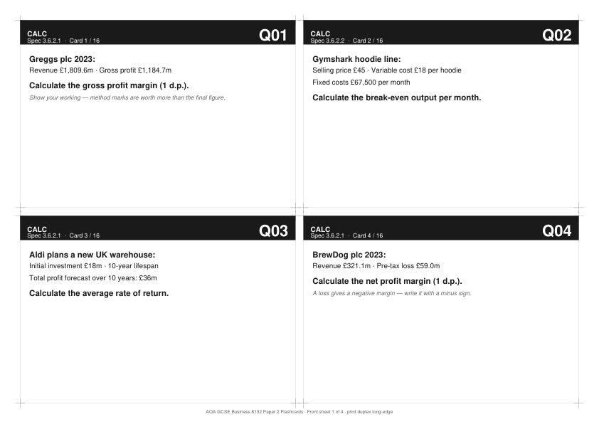

16 printable flashcards covering calculations, marketing application, finance application and exam technique — for Year 11 mock prep.

AQA-GCSE-Business-8132-Paper-2-Flashcards.pdf
Gross profit margin, break-even, ARR and net profit margin. Each with a worked example and a "common error" box on the answer side.
Aldi, ASOS, JD Sports and Pret A Manger — real UK businesses. Each card asks students to apply a marketing concept to a real-world scenario.
B&M, Costa Coffee, BrewDog and a contribution-per-unit scenario. Cash flow, profitability and break-even thinking applied to real UK businesses.
9-mark AO split, 12-mark AO split, command words decoded, and how to move a Level-2 answer into Level-3. Examiner-style structure cues.
AQA GCSE Business 8132 Paper 2 — Influences of marketing and finance on business activity. Cards cover the marketing mix application, financial decision-making and core calculations (gross profit margin, break-even, ARR, net profit margin), plus the four most common exam-technique mark-losses on 9-mark and 12-mark questions.
Sakari's TES author page lists additional GCSE and A-Level Business resources, including paid practice packs with full mark schemes and model answers.
Visit Sakari's TES shop →